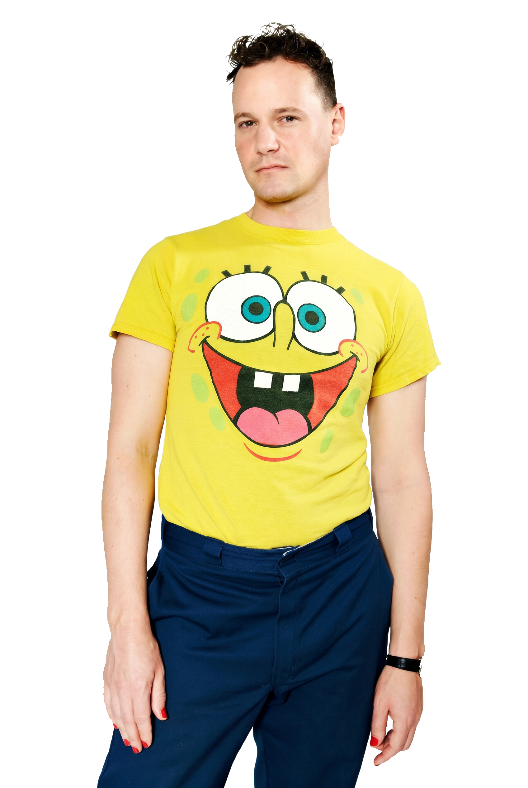

Bendix Fesefeldt was part of the preparatory team for the new artistic directorship under Andreas Beck in Munich, where he then worked as a dramaturg from 2019 to 2020. During the coronavirus pandemic, he conceived and curated Resi ruft an and was responsible for its implementation.
In 2020, he moved to Zürich as a dramaturg under the artistic direction of Benjamin von Blomberg and Nicolas Stemann. There, he was involved in several institutional change processes, often in the DEI (Diversity, Equity and Inclusion) area; for instance, he developed the staff tool “timezeit” to encourage greater interaction between different departments through flexible working hours. He was responsible for liaising between the ensemble and the theatre, as well as for the recruitment procedures for assistants. He conceived the opening, premiere and farewell parties, curated and moderated various panels, and organised staged readings. To counter declining audience numbers, he developed an Audience Summit, where interested parties engage in conversation with representatives of Zurich’s cultural scene at round-table discussions, whilst out walking, and over meals.
Bendix Fesefeldt is an independent theatre maker. He studied political science in Paris, Tel Aviv and Berlin focussing on Middle Eastern Studies and interning at the Institut français in Ramallah. After a brief detour into the private sector and some unsuccessful attempts in international NGO work, he started to work as a dramaturgy assistant at the international performing arts festival Foreign Affairs in Berlin in 2014 and to study theatre directing at the HfS Ernst Busch.
After successfully dropping out of his theatre directing studies he started to work as an in house dramaturg in institutions such as Residenztheater in Munich and Schauspielhaus Zürich. Alongside his institutional work, he also regularly worked in independent theatre contexts.
Since 2025 he works as an independent theatre maker, between dramaturgy, writing, directing and sometimes performing. Thematically, his work often connects themes of death and grief, desire and sexualised violence, and queer strategies of resistance.
